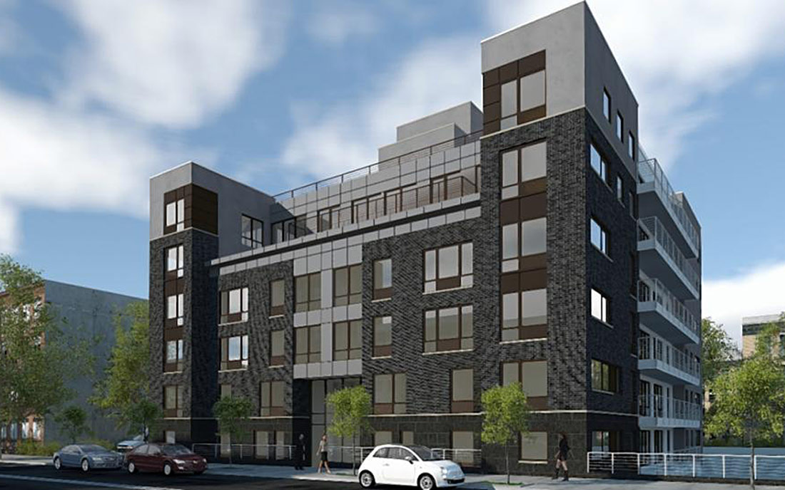

About Us
DICE's team of seasoned project managers provides critical management and oversight throughout every step of the construction process. DICE's scheduling team specializes in providing Critical Path Method (CPM) scheduling and project controls – the critical underpinnings for developing, analyzing, updating and monitoring project schedules and other project reporting procedures. Our passion for excellence and perfection is reflected every facet of the project's execution as relates to: quality, safety, efficiency and reliability.
